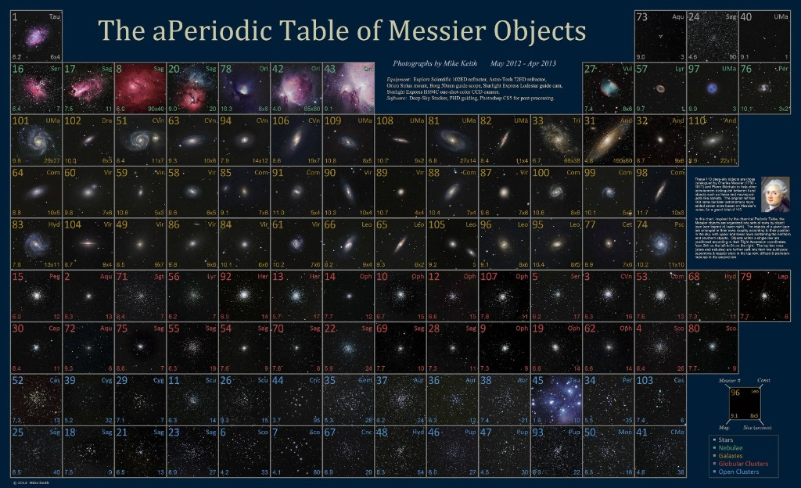

各月份最適觀測深空天體列表
資料來源：天体観測「Tentai Kansoku」Catalogue.xlsx — 工作表「天体观测」。
藍色 · 適宜觀測條件
夠亮（星等低）或夠大（視徑大）的欄位會標為藍色，兩者同時成立時最適合一般器材目視與攝影。 門檻可依自己的器材調整。
′ =
紅色 · 不適宜觀測天區
以觀測點緯度為中心、超出天頂正負 45° 的赤緯會標為紅色： 目標永遠低於地平線，或中天高度過低。
° 適宜赤緯
沒有符合條件的天體 / No objects match these filters.
星表縮寫 / Catalogue Abbreviations
表格中使用到的深空天體星表。
ポスター / The Poster
全 110 個梅西耶天體收於一張的「非」週期表。
